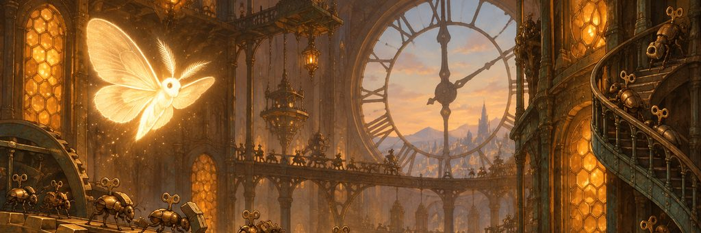

Glossary
Every Hivewright term in one place, from Aether to Winders.
A quick reference to the words used in the game and on this wiki. Terms that belong to later parts of the game are marked.
| Term | Meaning |
|---|---|
| Aether | The permanent currency you earn from a Rewind and spend on perks (and, later, the Loft). |
| Archivist | A helper that studies the cheapest research for you. |
| Brass | A resource gathered by Braziers; used for buildings. |
| Brazier | The job that gathers Brass. |
| Cell, Comb, Gallery, Spire | Housing buildings, holding 3, 7, 18 and 35 wind-ups. See Build and research. |
| Chamber | A side room, entered on an expedition, that holds patterns and, rarely, curios. |
| Chart-reader | A helper that runs expedition chambers for you. |
| Cog | One enemy position on a floor. A floor has 50. |
| Coiler | The job that gathers Springs. |
| Curio | A rare permanent treasure from a chamber. See Curios. Spoilers. |
| Draughtsman | The job that draws Schematics. |
| Era | A playthrough tier from the Grand Winding. See The Grand Winding. Spoilers. |
| Expedition | A run into a side chamber of 20 cogs, paid for with Gearshards. See Equipment and expeditions. |
| Floor | One level of the tower; 50 cogs, the last held by a Gatekeeper. |
| Gatekeeper | The tougher guardian on the last cog of each floor. See Gatekeepers and landmarks. |
| Gearshards | The currency for expeditions, dropped by Gatekeepers and the Rust. |
| Grand Winding | The deeper reset that begins a new Era. Spoilers. |
| Great clock | A clock restarted every 100 floors; each brightens the moth. |
| Great key | The hive's winding; its Tension scales work and attack. |
| Harness | Era equipment that multiplies swarm attack and health. Spoilers. |
| Hatchery | The building that assembles wind-ups. |
| Helper | An automatic hand earned by reaching a floor. See Helpers and automation. |
| Landmark floor | Every tenth floor, with a story fragment and Salvage. |
| Lantern Glow | A spell of doubled gathering and hatching, banked up to four hours. |
| Lantern Pass | An optional purchase that removes ads and takes the optional boosts without a video. |
| Lantern moth | The moth of light that boosts the busiest part of the hive. See The lantern moth. |
| Loft | A layer above the hive with six gear trains. See The Loft. Spoilers. |
| Oil | A resource gathered by Oilers; feeds the Hatchery. |
| Oiler | The job that gathers Oil. |
| Pattern | A blueprint found in a chamber that lifts a piece of equipment a tier. |
| Perk | A permanent upgrade bought with Aether. |
| Proving Ground | A building that adds 10% swarm attack and health. |
| Rewind | Reset the run for Aether. Available from floor 20. |
| Rust | The corrosion and creatures that fill the tower. |
| Salvage | One of three finds left every tenth floor; one is kept for the run. See Salvage. |
| Schematics | A resource that pays for research. |
| Springs | A resource for equipment and bigger buildings. |
| Swarm | A group of wind-ups sent up the tower. |
| Swarmer | The job whose wind-ups form each swarm. |
| Tension | How wound the great key is. |
| Time Jump | A stored jump of the hive's progress, used when you choose. |
| Torque | The Loft's currency, shared between gear trains. Spoilers. |
| Trial | An optional challenge run that bends one rule. See Trials. |
| Tuner | The job that trains swarms: +1% attack and health each. |
| Wind-up | A clockwork insect: worker and soldier. |
| Winder | The job that keeps the great key wound. |